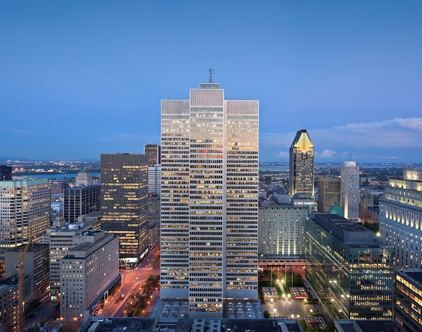
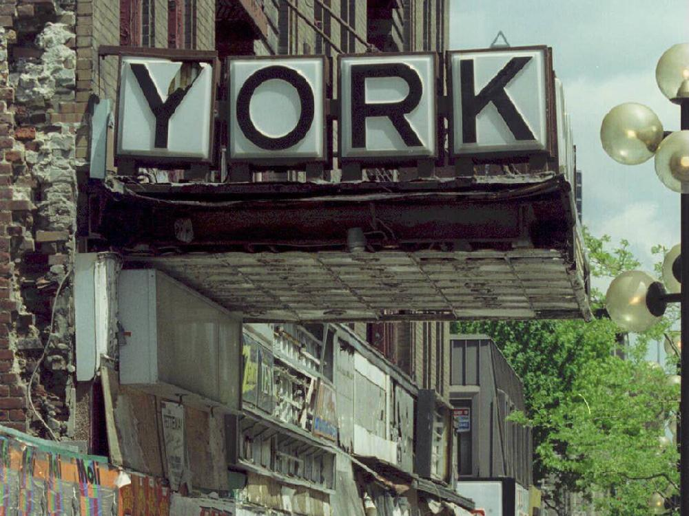
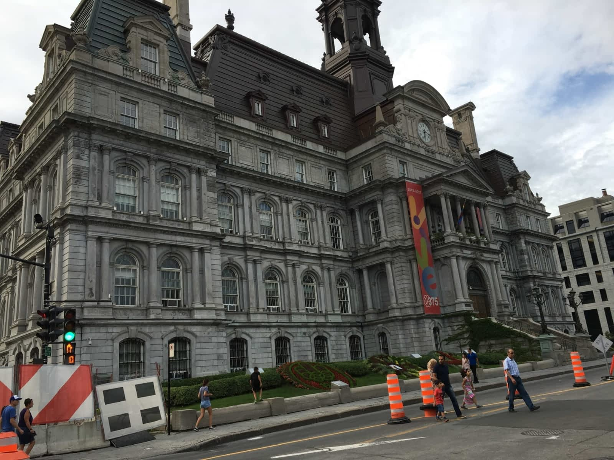

Art Deco period was a visual art style and design that was introduced in the 1940's in France.
Montréal Art Deco influenced monuments



| Placé Ville Marie is a prestigious shopping mall. It contains jewelry stores, restaurants, and boutiques. | An Art Decor Theatre called York Theatre. Created in 1938 by Perry Luke, who had previously designed over 100 theaters in Canada. | Hotel de Ville de Montréal, built in the early 1930's is a city hall for the government of Canada. The architect was Louis Parant, who brought French influence to the buildings design. |
|---|